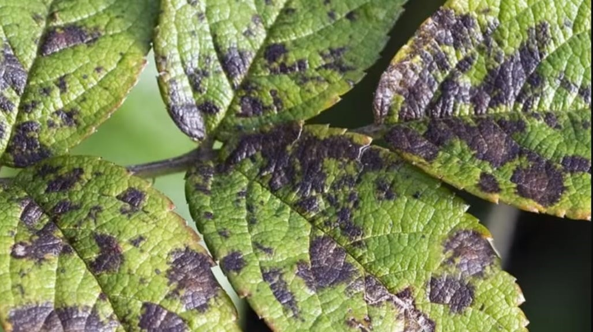
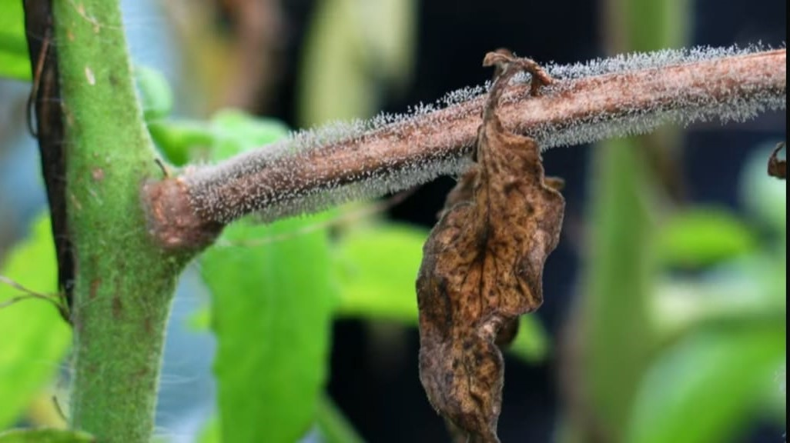
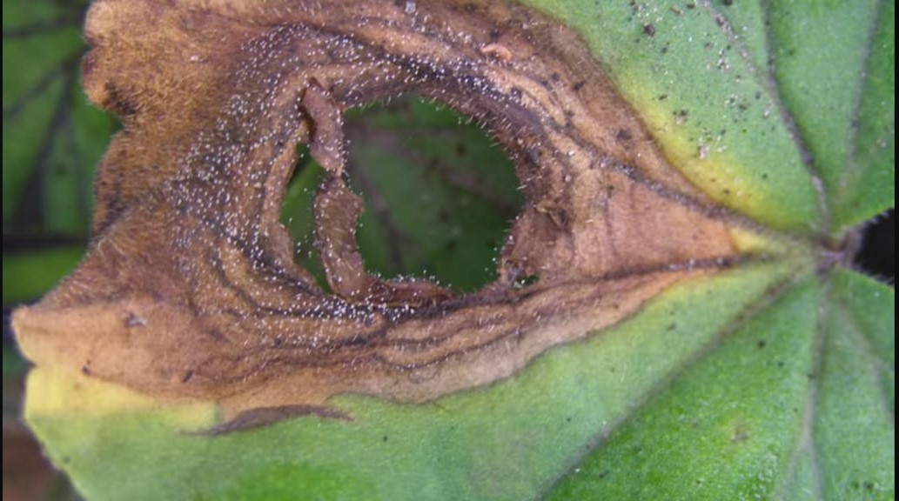
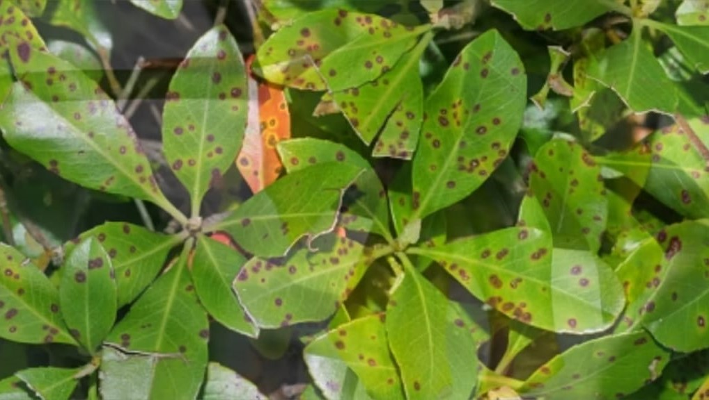
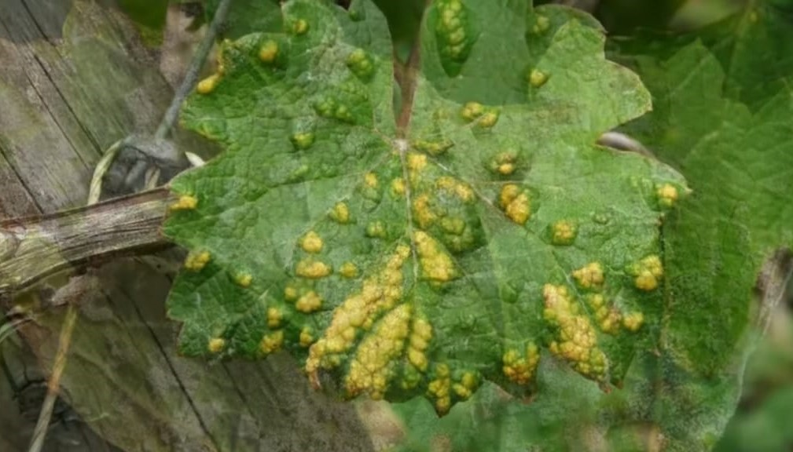
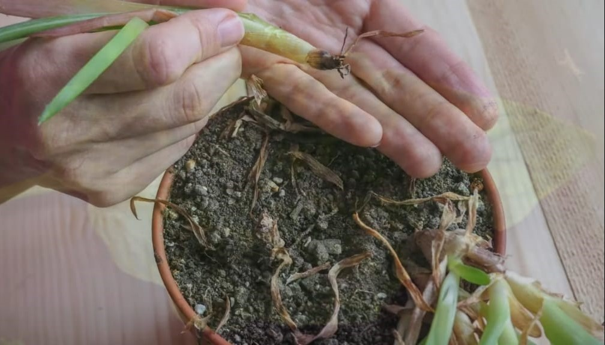
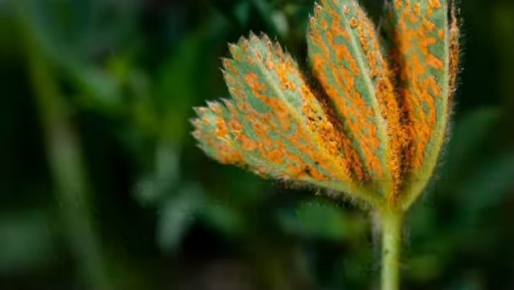
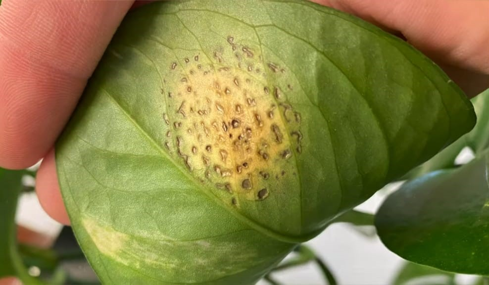
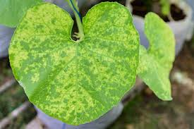
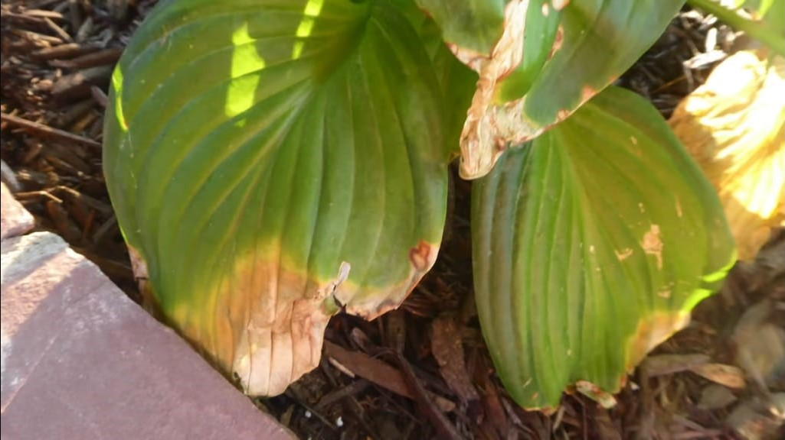

Black Mold
The reason
It usually occurs as a result of excessive humidity and poor ventilation.
Treatment and prevention
Improve ventilation and avoid spraying water directly on the leaves.

It usually occurs as a result of excessive humidity and poor ventilation.
Improve ventilation and avoid spraying water directly on the leaves.

It results from excessive moisture in plants and may affect leaves, stems and fruits.
Remove affected areas and improve ventilation.

It causes yellowing of the leaves and damage to the roots of the plant due to watering it with excessive amounts of water.
Reduce the amount of watering and monitor the soil's water content.

It usually appears on leaves and stems as a result of high humidity and poor ventilation.
Use safe fungicides to reduce the spread of diseases.

Viruses are transmitted by insects and affect the growth and general appearance of plants.
There is no cure, so remove infected plants to prevent transmission of the virus.

It occurs due to excessive moisture in the soil and may lead to damage to plant roots.
Transfer the plants to new, dry soil and reduce the amount of water.

It is caused by a fungus that infects the leaves and makes them appear orange or brown.
Use of fungicides to control rust.

Bacteria that causes small spots to appear on leaves.
Use of bacterial pesticides to control this soil

Various signs appear on the leaves indicating a lack of nutrients.
Use appropriate fertilizers to restore balance.

It occurs when plant leaves are exposed to direct sunlight.
Keep plants moist and protect them from direct sunlight.
Affects the growth and development of plants.
Improve the plant's position to receive more natural light or use additional artificial lighting.